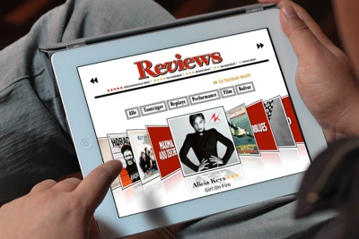

Since the first publication of the digital edition we were managing the design process and were responsible for HTML5 developments. We supported the whole produtcion process, including app and enterprise feature development. The german Rolling Stone for iPad is filled with a lot of interactive and process improving features built with HTML5, CSS3 and Javascript. A configurable iOS-optimized 3D coverflow as index for music reviews is used. iTunes audio samples are streamed into every article and the hardest music quiz of germany including a contest server was developed by Geil,Danke! Axel Springer used Portier as an entitlement server to distribute single issues to advertisers. A custom push notification service is integrated into the App.
Since the first days we are improving the development workflow and adapring InDesign templates regularly. As soon as the finished print layouts and contents arrive at Geil,Danke! we have a period of about 10-12 days to complete the whole edition – sometimes more than 170 pages with additional special content.
Download the Rolling Stone from the App Store:
{% include badge.html store="apple" %}
{% for cta in site.ctas %} {% if cta.lang == page.lang %} {% if cta.id == 'about-project' %} {% include cta-plain.html %} {% endif %} {% endif %} {% endfor %}